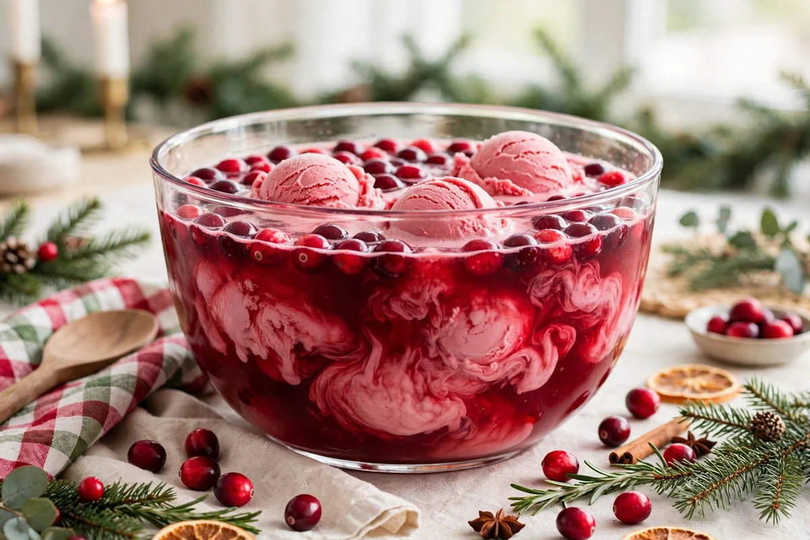
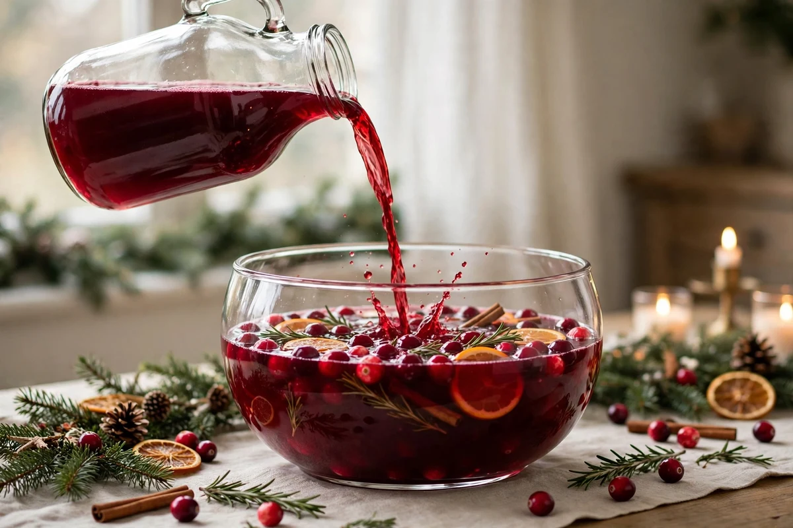
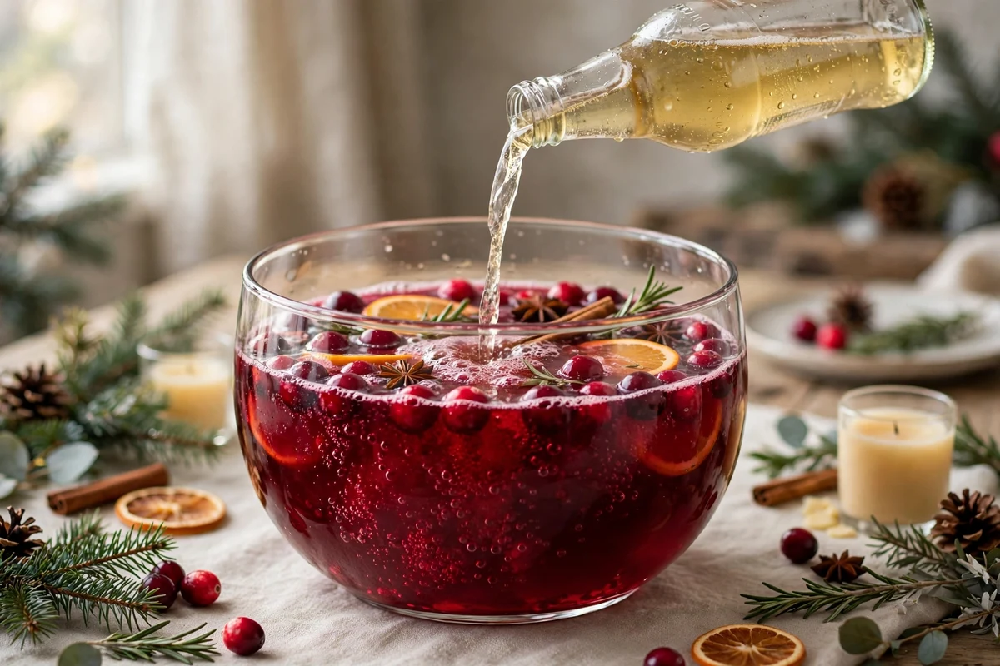
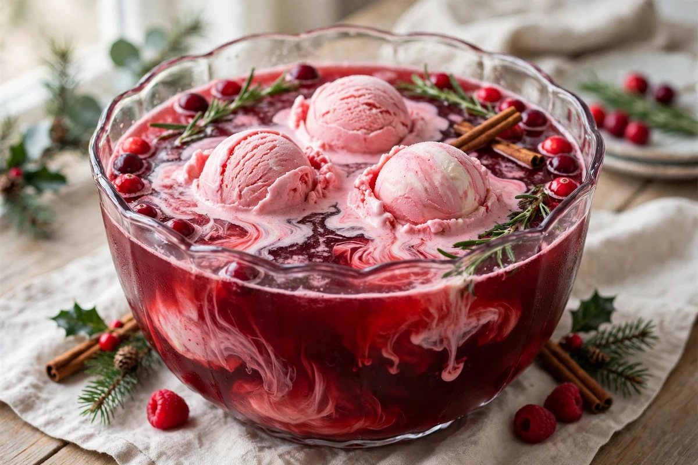
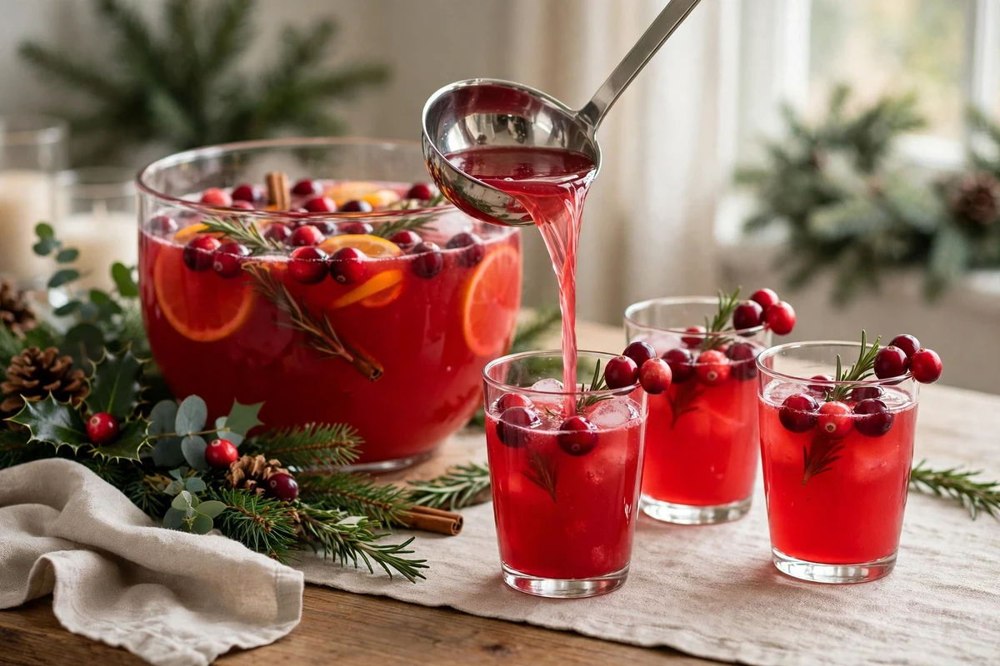

Christmas Punch
The punch that goes viral every single Christmas — cranberry and pineapple juice, fizzy ginger ale, and scoops of raspberry sherbet melting into pink clouds. Five ingredients, five minutes, one very happy party.
Prep: 5 minutes · Cook: 0 minutes · Method: No-cook, mixed in a bowl
Jump to recipe ↓ 📌 Pin this recipe

Why you will love this Christmas punch
It is the easiest party drink ever invented — pour, fizz, float the sherbet, and watch it turn into a swirling pink cloud that everyone photographs. It serves 24, it costs almost nothing, and it looks like you tried very hard.
Christmas Punch — full recipe
Ingredients

- 1 bottle (64 oz) cranberry juice cocktail
- 1 cup pineapple juice
- 1 litre ginger ale, chilled
- 2 cups raspberry sherbet
- Ice
- Fresh cranberries (to garnish)
Method — step by step
- Step 1 — Chill everything first. Chill the cranberry juice, pineapple juice and ginger ale in the fridge — warm juice melts the sherbet instantly.
- Step 2 — Pour the juices. Pour the cranberry juice and pineapple juice into a large punch bowl and stir once.
- Step 3 — Add the ginger ale. Add the ginger ale last, pouring it slowly down the side of the bowl so it does not foam over.
- Step 4 — Float the sherbet. Float big scoops of raspberry sherbet on top — do not stir. The sherbet melts into swirling pink clouds.
- Step 5 — Serve right away. Ladle into glasses while the sherbet is still partly frozen, and drop in a few fresh cranberries.



What to serve with it
Christmas punch loves a party spread — serve it with:
- With Christmas cookies — the classic pairing.
- With a cheese board — sweet punch, salty cheese.
- With mince pies — the full festive table.
- With a straw — for the sherbet clouds.
- On its own — it is the whole party.
Chef tips
- Add the ginger ale last and pour it slowly down the side so it doesn't foam over.
- Chill everything first — warm juice melts the sherbet instantly.
- Do not stir after adding the sherbet — the swirls are the whole point.
- Use juice cocktail, not 100% juice — it is sweeter and more party-appropriate.
- Make an ice ring the night before to keep it cold without diluting it.
Variations
- Adult: add 2 cups vodka or swap in a bottle of Prosecco.
- Rainbow: use rainbow sherbet instead of raspberry.
- Grinch: use lime sherbet and green food colouring for a Grinch punch.
- Orange: swap the pineapple juice for orange juice.
- Spiced: add cinnamon sticks and star anise to the bowl.
Make ahead & storage
Chill everything the night before, and make a fruit ice ring in a Bundt pan (fruit + water, frozen overnight) to keep the bowl cold for hours without diluting it. Mix the punch right before guests arrive — the sherbet swirl only lasts about 30 minutes.
Frequently asked questions
Can I make it alcoholic?
Yes — add 2 cups vodka, or swap the ginger ale for Prosecco.
Can I make a smaller batch?
Yes — halve everything for 12 servings.
What if I cannot find raspberry sherbet?
Rainbow sherbet works the same way.
How long does the swirl last?
About 30 minutes — serve it straight away.
Kitchen equipment you will need
- A large punch bowl
- A ladle
- A long spoon
- Glasses
- A Bundt pan (for the ice ring, optional)
Do not stir after the sherbet goes in. The swirling pink clouds are the whole point — stir and you just get pink juice.